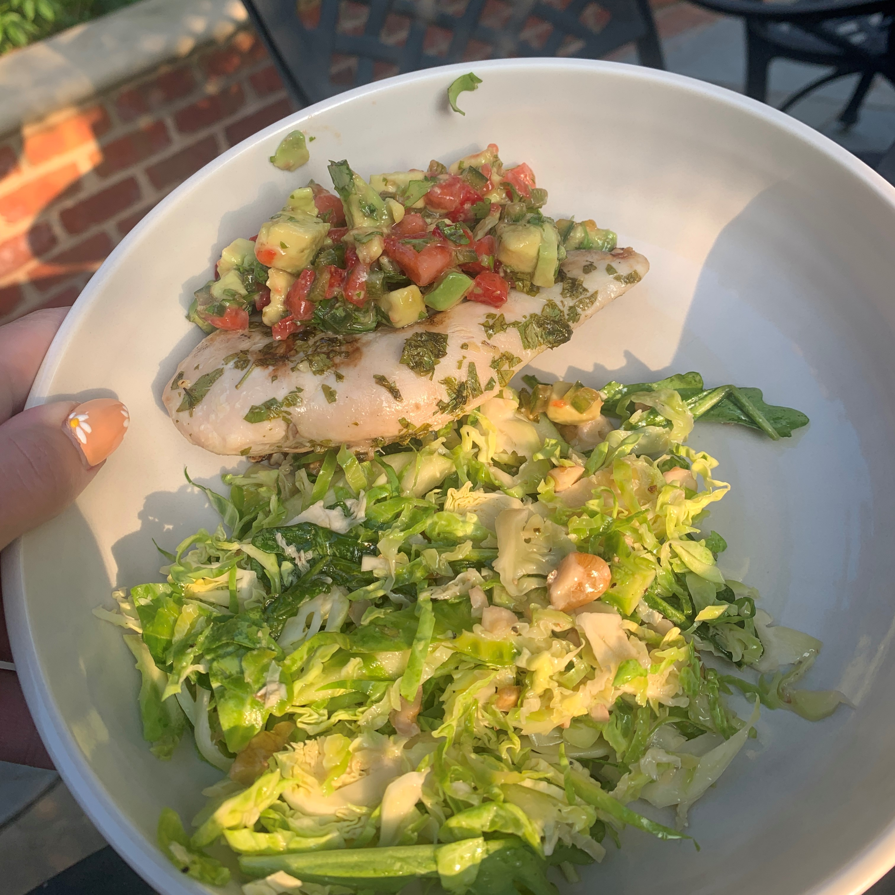
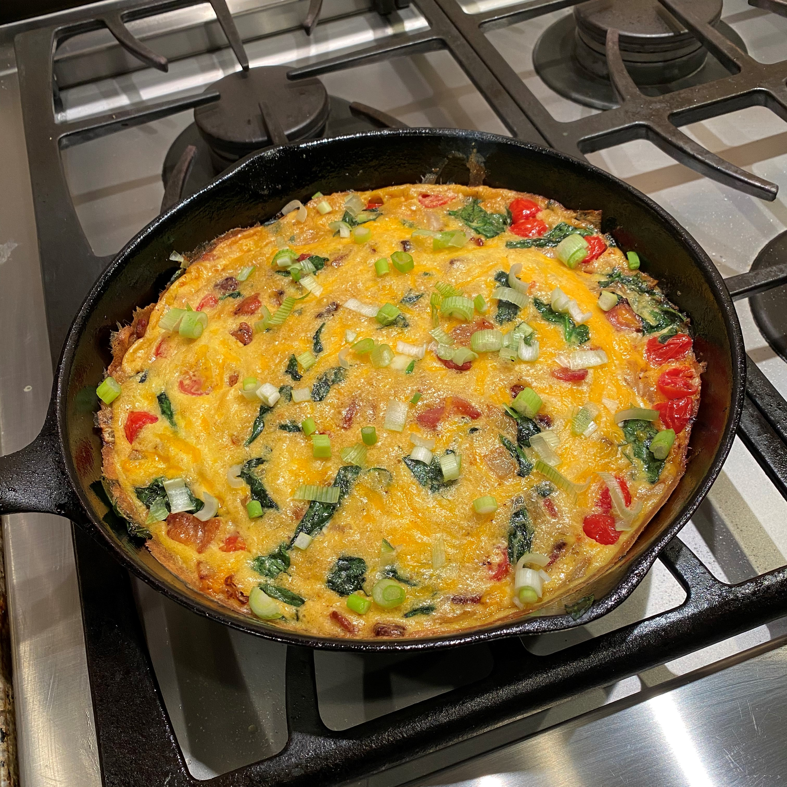
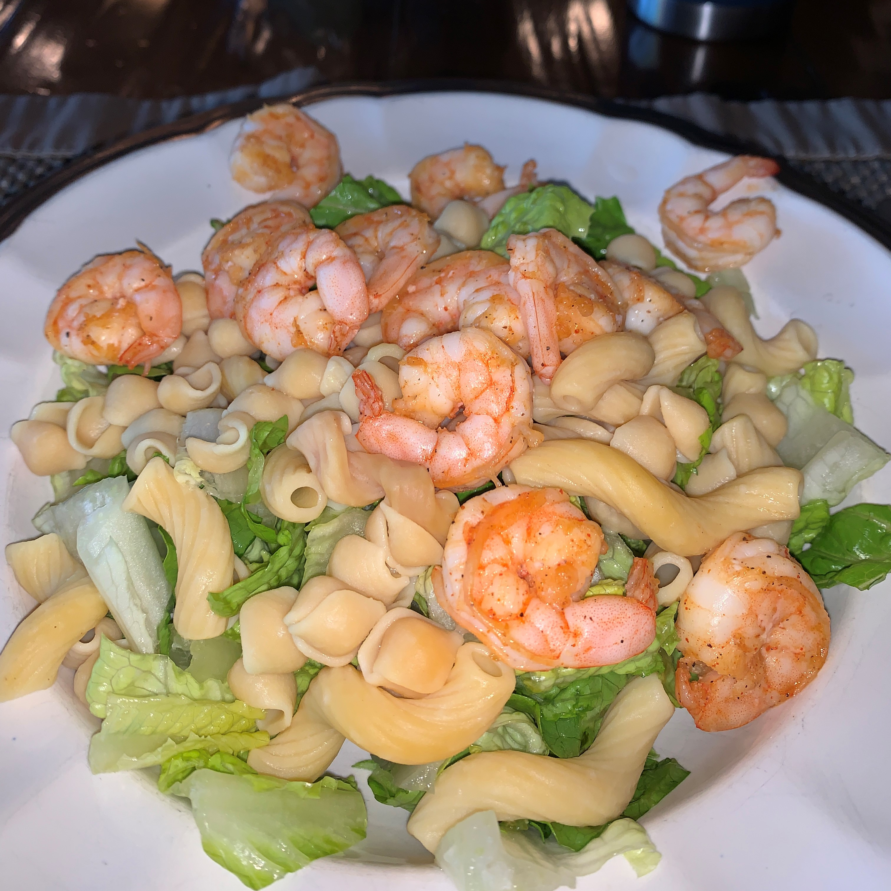

Oh, The Struggles of Cooking
I didn't realize until I got older how hard making dinner every single night truly is! I am the first to admit that I'm not the best cook out there (I consider myself to be more of a baker), but I have managed to collect a few recipes that are so simple that even I can't mess them up. Below are a collection of my go-to delicious and filling meals. I have made these for friends and family and people are always impressed (which is great given how easy these are:))!
Salmon Bowl!

Best Salmon Ever
My favorite salmon recipe ever! You can see the full recipe here! To make this dish, I made the salmon and mango salsa according to the recipe linked above. I then paired it with some shredded romaine and air fried sweet potatoes to make a balanced meal!
Chicken Dinner!
Heavenly salsa
Prepare chicken to your liking, make mango salsa!
This dinner is one of my favorites because it has so many delicious flavors! The strawberry, jalapeno, and citrus flavors in this recipe compliment this chicken so well.
Breakfast Frittata!
The Best Meal of the Day
Impress your friends with this easy and delicious frittata! I make this for Mother's Day every year and it never fails to impress my family. I got the recipe here!
Shrimp Bowl!
Best "Lazy" Dinner
No "real" recipe needed here! Make your shrimp however you like and pair with protein pasta, greens, and vegetables for a delicious and nutricious meal!